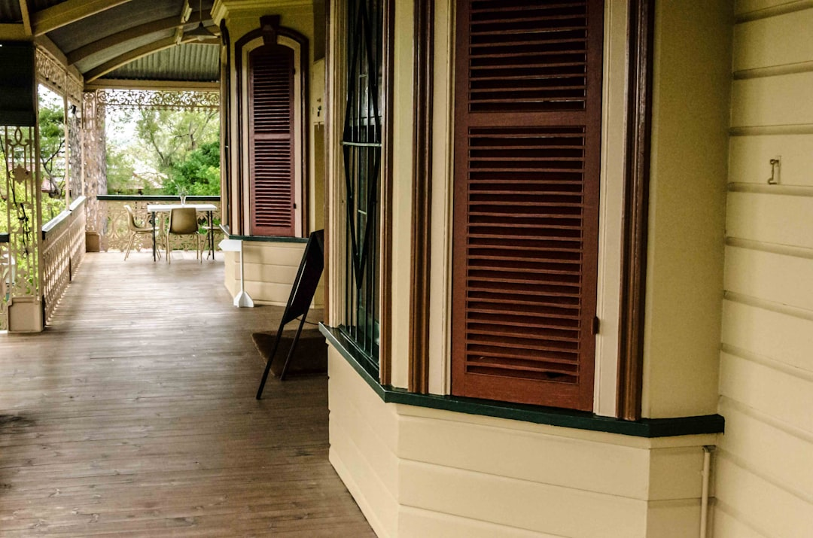

For a stuck or jammed roller door in Brisbane, the useful starting point is the published guide pricing: a standard service call-out is listed at $120 to $200, lifting cable replacement at $180 to $320, track roller replacement at $160 to $300, and opener or motor replacement at $600 to $1,100. Standard spring, opener and off-track jobs are described as often taking one to two hours once the technician is on site, with a written fixed-price quote before work begins.
For homeowners comparing roller door repairs brisbane options, the practical question is whether the fault needs adjustment, replacement parts, opener diagnosis or a written quote before approval.
Roller Door Repairs Brisbane Explained
Garage Door Repairs Brisbane describes Brisbane technicians handling broken springs, faulty openers, jammed roller doors and off-track sectional doors across the metro catchment. For the reader, the useful first filter is the symptom: a curtain that will not lift, a door that has come off its track, a remote that no longer triggers the opener, or hardware that has worn enough to stop smooth travel.
A useful enquiry gives the technician enough information to triage the job before visiting. State whether the door is roller, sectional or tilt, whether it is manual or powered, and whether the door is stuck open, stuck closed, jammed, crooked or not securing. The published process says the suburb or postcode also helps the right Brisbane technician respond faster.
- Ask whether the visit starts with inspection and diagnosis before parts are fitted.
- Ask whether the quote will separate labour, parts and any call-out component.
- For powered openers, ask whether electrical work will be handled by a licensed electrician.
Repair or replace the affected part
The published service list is broad, but it is still centred on ordinary residential garage door faults: spring repair, opener repair, off-track door repair, panel and section replacement, cable and roller replacement, remote and keypad programming, new garage door installation and emergency repair. That makes the main decision a repair-path question, not a brand-choice question.
If the lifting system has failed, the quote should identify whether the work is spring replacement, cable replacement, roller replacement or track correction. If the door moves but the motor does not respond, the issue may sit with the opener, remote, keypad or motor unit. If panels are damaged but the rest of the system still works, panel or section replacement may be more relevant than replacing the whole door.
The sibling guide to garage door repairs in Brisbane is useful for comparing the broader repair categories before narrowing the enquiry to a roller door fault. Keep the diagnosis specific, because a vague request can hide whether the cost is mostly access, parts, opener replacement or door hardware.
Cost signals before approving work
The clearest numbers available are guide prices, not final quotes. The published table lists a service call-out or standard service at $120 to $200, torsion spring replacement at $220 to $450, lifting cable replacement at $180 to $320, track roller replacement at $160 to $300, opener or motor replacement at $600 to $1,100, and a new single sectional door supplied and installed at $2,500 to $5,000.
Those figures are explicitly described as guides only. The final amount can vary by door type and size, spring and hardware condition, opener brand, site access and after-hours surcharges. A homeowner should therefore treat the range as a planning tool, then rely on the attending technician's written fixed-price quote before approving the repair.
- Minor movement fault: ask whether adjustment or roller replacement is enough.
- Door will not lift: ask what spring, cable or hardware has failed.
- Opener fault: ask whether repair, programming or motor replacement is being quoted.
- After-hours request: ask whether any surcharge changes the written price.
Who this applies to
This guide is for Brisbane households dealing with a roller, sectional or tilt garage door that has stopped working normally. It also suits owners comparing whether a fault belongs in a simple service visit, a part replacement, opener diagnosis, panel work or a broader door replacement conversation.
The published service area includes Brisbane's north, south, east, west and bayside catchments, with examples including Chermside, Carindale, Wynnum, Indooroopilly and Mount Gravatt. Those locations matter mainly for response planning and site access, not because the repair categories change from suburb to suburb.
It is less relevant to commercial maintenance programs, strata procurement or building work where the main issue is a large installation scope. For those jobs, the quote conversation should start with door size, operating system, access constraints, usage pattern and whether the work is repair, replacement or new installation.
Powered opener and quote checks
Powered opener work deserves a separate check because the published page says electrical work on powered openers is carried out by a licensed electrician under the Queensland Electrical Safety Act 2002. A homeowner does not need to diagnose the electrical issue, but they should ask who is doing that part of the job and how it appears on the quote.
Remote and keypad programming can be a different job from motor replacement. If the door opener is not responding, describe what still works: wall button, remote, keypad, lights, motor sound and manual release. That helps separate control issues from a failed motor unit or a mechanical door problem putting load on the opener.
Before approval, ask for an inspection, an explanation of the fault, confirmation of the parts required, and a written fixed-price quote. The published process says work begins after that quote is provided, and the customer deals directly with the attending technician.
- Describe the door. State whether it is a roller, sectional or tilt door, and whether it is manual or powered.
- Explain the fault. Say whether the door is stuck, jammed, crooked, off track, not securing or failing through the opener.
- Share the location. Provide the suburb or postcode so the technician can plan a suitable Brisbane visit.
- Ask for the diagnosis. Before approving work, ask what part has failed and whether repair or replacement is being recommended.
- Confirm the quote. Proceed only after receiving the written fixed-price quote described on the published page.
| Situation | Likely quote focus | Published guide range |
|---|---|---|
| Standard service visit | Inspection, adjustment or minor service | $120-$200 |
| Door will not lift smoothly | Spring, cable, roller or track hardware | $160-$450 depending on part |
| Powered opener not responding | Remote, keypad, opener diagnosis or motor replacement | $600-$1,100 for opener or motor replacement |
| Door damage beyond a small repair | Panel, section or new door discussion | $2,500-$5,000 for a new single sectional door supplied and installed |
Common questions
How much should I budget for a roller door repair? Use the published Brisbane guide ranges as a planning guide. A standard service call-out is listed at $120 to $200, while cable and roller work sits in the $160 to $320 range depending on the part.
Can a stuck garage door be repaired the same day? The published page says many standard repairs, including spring, opener and off-track jobs, are completed in one to two hours once the technician is on site. Actual timing still depends on the fault, parts and scheduling.
Do powered opener faults need a different check? Yes. The published page states that electrical work on powered openers is carried out by a licensed electrician under the Queensland Electrical Safety Act 2002, so ask how that part of the job will be handled.
What should be in the quote before work starts? Ask for the diagnosed fault, the proposed fix, required parts, labour, any call-out cost and whether after-hours charges apply. The published page says the attending technician provides a written fixed-price quote before work begins.
This guide covers practical repair decisions, guide pricing and quote checks for Brisbane residential garage door faults.